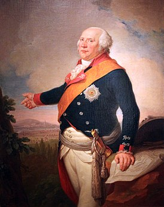
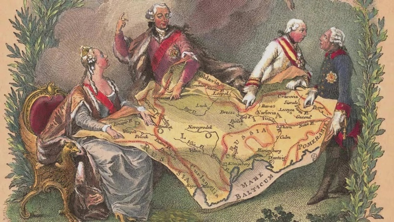
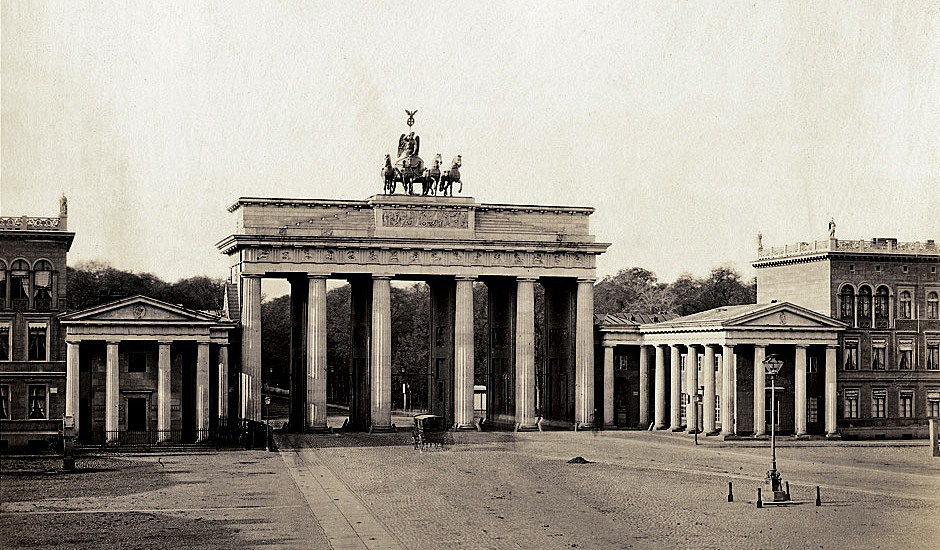

Преемником великого «старого Фрица» на прусском троне стал его племянник Фридрих
Вильгельм II. Он стал ярким наглядным примером известного выражения «Гора родила мышь».
Если Фридрих посвящал практически все свое время управлению государством, не вылезая
из рабочего кабинета или же постоянно разъезжая по стране, то его наследник не проявлял ни
малейшего интереса к государственным делам. В данном случае Пруссия столкнулась с явлением, характерным для любых государств: великим правителям часто наследуют посредственные бездари, прожигающие наследие своих августейших отцов.

Иоганн Кристоф Фриш. Портрет Фридриха Вильгельма II (1797), Германский исторический музей
Едва вступив на трон, Фридрих Вильгельм отменил наиболее тяжелые налоги, введенные
его предшественником, из-за чего пруссаки радостно вздохнули с облегчением. Помимо этого,
он отправил обратно во Францию главу фискальной службы месье де Лонэ, получавшего при
Фридрихе II 15 тысяч талеров в год, и упразднил ненавистную пруссакам монополию на кофе
и табак [29]. Казалось бы, молодой король начинает обретать популярность, но вскоре выяснилось, что он не только не способен, но и не проявляет желания к управлению государством.
Фридрих Вильгельм II решительно отказался от облегчения крестьянских повинностей и продолжал сверх меры расширять привилегии дворянства [30].
Кроме того, он не озаботился сменой военных и политических кадров, находившихся
на своих постах еще со времен «старого Фрица». Эти пожилые люди уже не могли успеть за
временем и новыми идеями, вдохновляемыми Великой Французской революцией, такими как
конституция и призывная армия. Так Пруссия, сама когда-то подававшая всей Европе пример
военного и политического устройства, постепенно стала превращаться в оплот консервативной
реакции.

Аллегория на раздел Речи Посполитой
Деградация коснулась и внешней политики Пруссии. Фридрих Вильгельм не стал продлевать союз с русской императрицей Екатериной, а также отказался от активного участия
в антиимперском Княжеском союзе, созданном Фридрихом Великим для охраны суверенитета германских государств. Еще одним крайне неоднозначным шагом со стороны Фридриха
Вильгельма II стало присоединение польских земель во время Второго и Третьего разделов
Речи Посполитой. Еще с 1772 года Пруссия владела необходимым ей сухопутным коридором
к Кенигсбергу. Фридрих II не проводил дальнейшей экспансии вглубь Польши, дабы не провоцировать этническую напряженность и не нарушать своей концепции строительства Пруссии
как сугубо немецкого национального государства.
Фридрих Вильгельм проигнорировал эти соображения и, на мой взгляд, у него было на
то, как минимум, две причины. Во-первых, он хотел хоть как-то оставить свое бездарное правление в истории Пруссии и не желал упускать возможность мирно присоединить земли соседней державы, находившейся в состоянии агонии. Во-вторых – и это, пожалуй, самое главное
-, прусская экономика находилась в кризисе из-за провальных войн с Францией и отчаянно
нуждалась в новых налоговых поступлениях. Как пишет Карл фон Клаузевиц, Фридрих Вильгельм за 11 лет своего царствования успел потратить 70-80 млн талеров из казны, а также накопить еще 30 млн государственного долга [31]. Однако в целом присоединение древних польских
земель не принесло Пруссии больших выгод. В 1807 году Наполеон отобрал их у нее и вернул
в состав Великого герцогства Варшавского.

Бранденбургские ворота в Берлине, 1850 год
Пожалуй, единственное, за что немцы могут сказать Фридриху Вильгельму II «danke» –
это возведение Бранденбургских ворот в 1789-1791 гг. Квадрига, украшающая ворота, стала
одним из национальных символов Пруссии и Германской империи, наряду, пожалуй, с Железным крестом. Ворота были возведены в память об успешной экспедиции прусских войск в Республику Соединенных Провинций, где, под влиянием революции во Франции, также начались
протестные движения против власти штатгальтера. Бранденбургские ворота получили второе
название «Ворота мира», но тогда в Пруссии мало кто мог подумать о том, что этот самый мир
продержится совсем недолго…
Личная жизнь короля
На самом деле Фридрих Вильгельм II был глубоко несчастным человеком. Его воспитанием занимался сам великий Фридрих, но будучи, как мы уже о том говорили, по натуре своей
черствым и холодным человеком, он не мог дать племяннику той отцовской любви, которая
формирует характер и ограждает от дурного влияния. Первая жена наследника престола изменяла ему направо и налево; лишь вторая супруга Фридерика сумела родить Фридриху Вильгельму сына, о котором более подробно мы поговорим далее. Но по-настоящему его любила
только одна женщина: Вильгельмина Энке, графиня фон Лихтенау.
Портрет Вильгельмины Энке, фаворитки Фридриха Вильгельма II
Вильгельмина была дочерью музыканта и именно любовь к музыке сблизила ее изначально с Фридрихом Вильгельмом. В то время ей было всего 12 лет, и она стала преданной
ученицей наследника трона. Романтик по своей природе, он вложил в образование девушки
всю свою душу, обучив ее истории, географии и философии. В Париже она освоила, помимо
танцевальных навыков, еще одно искусство – искусство любви.
Впоследствии ее называли «прусской мадам Помпадур», но Вильгельмина не обладала
схожими со знаменитой французской куртизанкой циничностью, расточительностью и склонностью к интригам. Она действительно любила и любила страстно. Уже в глубокой старости
Вильгельмина с гордостью демонстрировала шрам от раны, который она оставила, написав
кровью вместо чернил клятву любви к Фридриху Вильгельму [32].